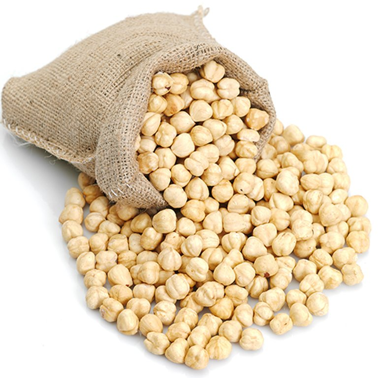

Günde bir avuç dolusu fındık yiyenlerin kalp krizine daha az yakalandığı araştırmalarla ortaya konuldu. Fındık ayrıca, bedeni ve zihni yorgunluğu giderir. Vücuda kuvvet ve enerji verir. Nekahet devresinin çabuk geçmesini sağlar. Cildi güzelleştirir. Hamilelere de faydalıdır. Dövülmüş yenirse öksürüğü keser. Varise faydalıdır. Fındık yağı, böbrek ağrılarına iyi gelir. Kum ve taşların düşürülmesinde yardımcı olur. Bağırsak solucanlarını düşürür. Sarada da faydalıdır.
